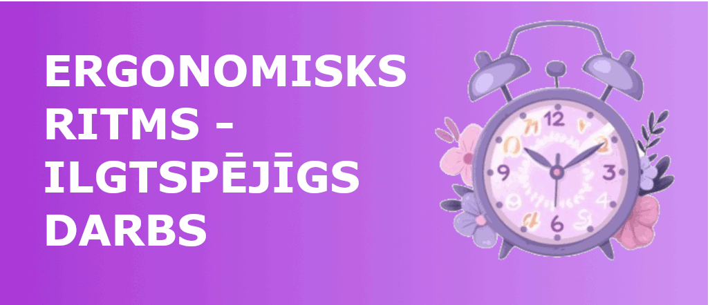
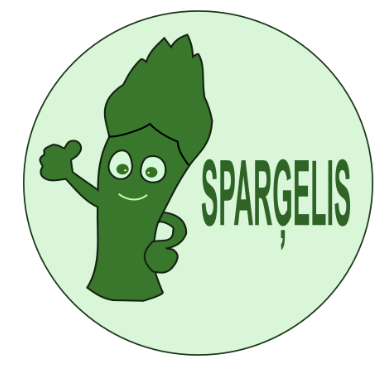

DATORIKAS PORTFOLIO
Attēlu apstrāde.
Rastrgrafika
Programma - Gimp

Attēlu veido atsevišķi punkti jeb rastra elementi, kurus sauc par pikseļiem.

Vektorgrafika
Programma - Inkscape

Attēlu veido no taisnēm un līknēm.

Logo ideja
Logo ir parādīts laimīgs sparģelis, kas atspoguļo uzņēmuma nosaukumu un to, ka tas nodarbojas ar dārzeņu audzēšanu, pārstrādi un tirdzniecību. Sparģelis ir laimīgs, jo uzņēmuma produkcija ir organiski audzēta, augstākās kvalitātes un uzturvielām bagāta. Kā arī vārds "Sparģelis" nosauc uzņēmumu. Kā krāsas ir izmantoti dažādi zaļi toņi, kas atbilst uzņēmuma veģetārisma un vegānisma filozofijai.
3D modelēšana
Programma - Tinkercad


Video
Programma - InShot

Izklājlapas.
Sastāv no rindām un kolonnām, kuru krustpunktus sauc par šūnām. Šūnās var ievadīt tekstu, skaitļus un formulas.
Izklājlapās apguvām datu ievadi un apstrādi, formulu un funkciju izmantošanu, šūnu formatēšanu, tabulu veidošanu, datu kārtošanu un filtrēšanu, kā arī diagrammu izveidi un rediģēšanu.
Tekstapstrāde.
Datora izmantošana dokumentu veidošanas, rediģēšanas, formatēšanas, lasīšanas un drukāšanas procesā.
Tekstapstrādē apguvām teksta formatēšanu, rindkopu formatēšanu, dažādu objektu ievietošanu tekstā, satura rādītāja, paraksta un citu atsauces tipa objektu ievietošanu, veidnes, pasta sapludināšanu u.t.t.
Par individuālo tēmu formatēts dokuments atbilstoši ZPD formēšanas noteikumiem.
Lejupielādēt Word failu